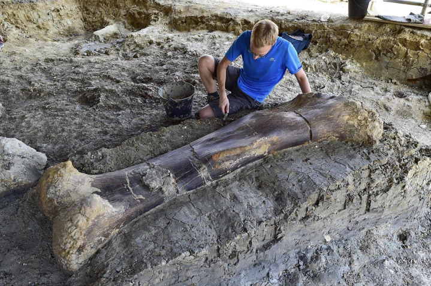
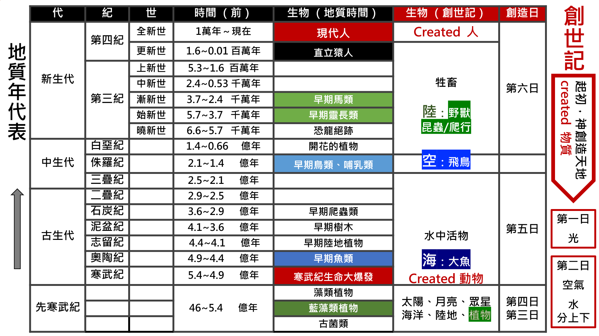
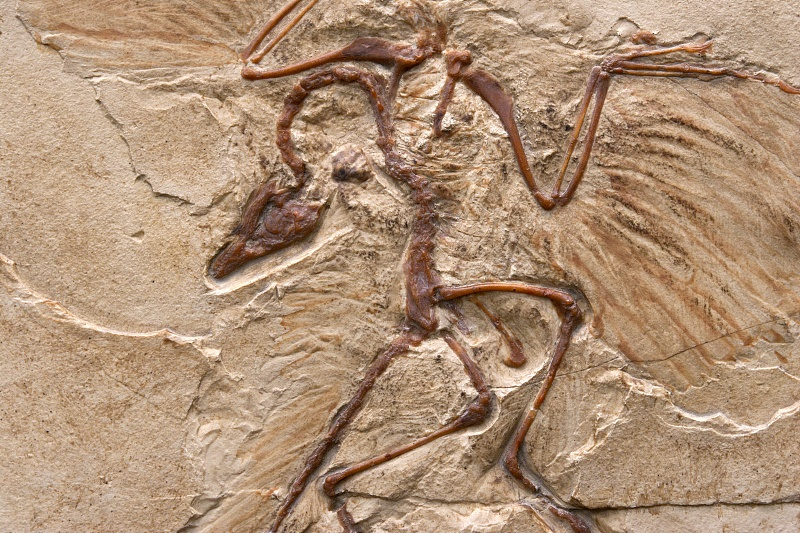

科學
科學
恐龍活在六千多萬年前嗎？ 
自1822年，在英國曼徹斯特發現第一具恐龍化石後，引發了人們對於這巨大脊椎動物的興趣。科學研究關於恐龍在6500萬年前，已經從地球表面消失。 聖經
聖經
地質年代表中的脊索動物門 
科學家依地球曾經發生的重要地質事件作分界，劃分地球歷史時間，稱之為地質年代表（如附表）。我們在這個表中，特別將動物界的脊索動物門出現順序標記出來，從寒武紀開始的魚類、兩棲類、爬蟲類、鳥類和哺乳類等化石陸續出現，和創世記精簡的記載第五、六日陸續創造海、空、陸主要的動物做一個對比，竟然有極高的巧合。上帝在第五、六日創造動物
我們看聖經創世記第一章時，上帝以二日有依序地創造海、空、陸各種生物，其順序與地質年代表中的脊索動物出現相當雷同。大多種動物門突然出現
寒武紀在距今5.4億年前約有六千萬年期間，其沉積岩是最古老且含有豐富化石的地質地層；反觀更早且更低地質地層中，並沒有或甚少生物化石出現。化石證據指出主要動物的生命形式，突然在寒武紀出現在地層中，且同時在世界上不同生態系統的多個地點出現，如在加拿大伯吉斯頁岩所挖掘的化石，和在中國雲南澄江等地的大量化石出土均可見而非特例。難以解釋的演化歷程
生物科學課本提到演化生命樹的概念，不同物種生物逐漸演化出現且需要漫長的時間歷程。因此，在寒武紀地層中同時間大量出現的生物化石，一直是演化論學者的困惑，也是科學界仍在努力釐清的疑團；另一方面，不同類動物門的化石突然大量出現，瞬間呈現精彩生命的多元樣貌，這不就來自於聖經創世記上帝的「創造」？ 若是以聖經六日創造解釋，第四日才造太陽、月亮，「日」是24小時顯然不適用於前三日。因此，創造六日可以合宜地詮釋為六個創造時代，因此估算宇宙大爆炸至今138億年以及地球有46億年，與聖經沒有直接衝突。欠缺演化中間化石的證據
從達爾文時代開始，一般演化論學者認為 始祖鳥  是介於有羽毛恐龍和最早鳥類之間的過渡物種。但隨著比其更古老、構造上也更接近現生鳥類的近鳥龍、曉廷龍和曙光鳥等相繼被發現，始祖鳥在鳥類演化學上的地位已經動搖，被新的古生物鳥類取代，也未發現有演化到近似始祖鳥的其他半成品證據。生物各從其類，化石清楚分類
從過往至今的出土化石，其出現的方式型態可以說大部分是相對明確可分類的，沒有太多的參雜或混亂，正如聖經創造所採用的定律「各從其類」。